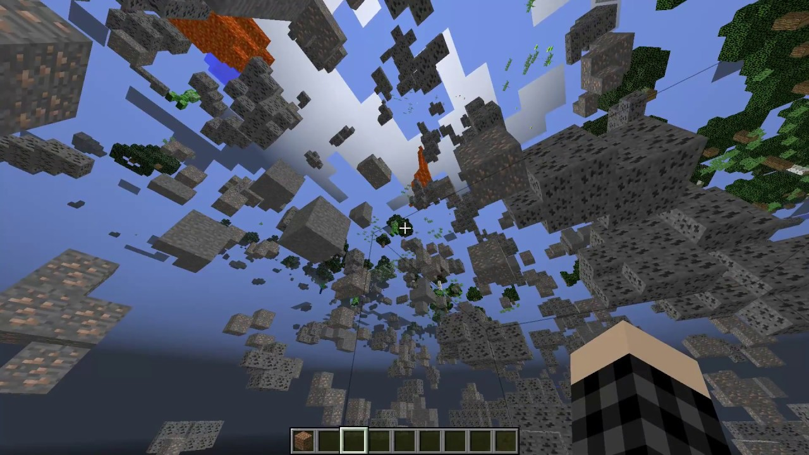
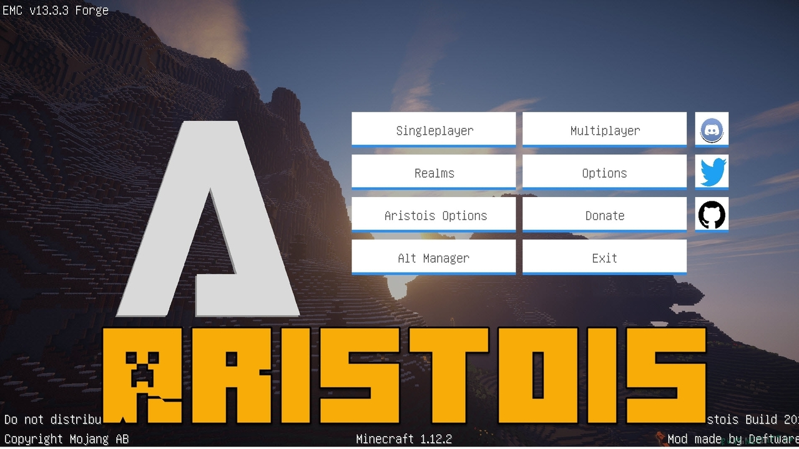

Xray mod

Xray - это классика читов. Он поможет вам найти все дорогие ресурсы в игре, c помощью рентгеновского зрения.
Установка:
1. Скачать и установить Rift.
2. Скачать и перекинуть мод Xray в папку mods.
X - включить чит. C - включить режим пещеры. H - включить fullbright. N - открыть меню.
Aristois

Чит Aristois - вполне популяный клиент. Имеет неплохой сборник популярных читов, неплохой дизайн меню, если хотите читерить, выбирайте его.
Установка:
1. Скачать и запустить установщик.
2. Вы можете выбрать папку для установки чита, а так же указать нужна ли поддержка Otifine или Forge.
Открытие меню на правый Shift.
SkillClient

SkillClient - это чит клиент майнкрафт, сборник большого количества разных читов для игры майнкрафт, он создан для получения преимущества над игроками на серверах. Содежит приятный и удобный интерфейс.
Установка:
1. Скачать и распаковать архив.
2. Перенести папку с читом в папку versions.
Открытие меню на правый Shift.